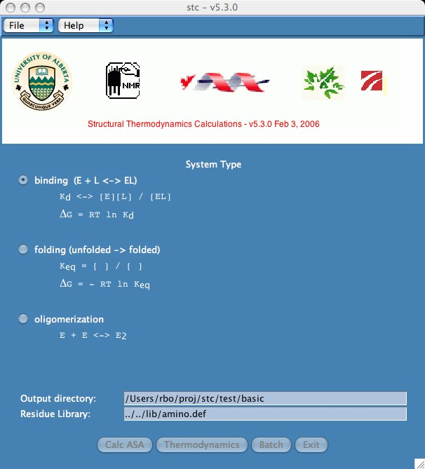

List the directory and you will see there are two structures,
jrb.complex.pdb and
jrb.free.pdb
Start the stc program by typing "stc".
> cd tutorial
> ls
> stc

Note that the system type for our data is "binding". One could also choose
"unfolding" or "oligomerization". Our examples library contains sample runs
of these system types.
The output directory is where stc writes all the output files. The
residue library is where we define the amino acids, nucleotides, and
parameters used in the calculations. Users with unique amino acids will
need to create a customized residue library. The directory lib/examples/xuw
is an example of this type of problem.
The Calc ASA button allows one to calculate accessible surface
area (ASA) output files. The Thermodynamics button lets the user
make thermodynamic calculations based on the ASA files. Batch is
a special case where the user wants ASA and thermodynamic calculations
to be applied to several pdb data files.